DocumentaciónDocumentation
Todo lo que Tutti hace y cómo sacarle partido: desde instalarlo hasta publicar una release.Everything Tutti does and how to get the most out of it: from installing it to publishing a release.
InstalarInstall
Tutti es una aplicación de escritorio para Linux y Windows (macOS llegará más adelante). No necesita permisos de administrador.
Linux
curl -fsSL https://github.com/cyansaju-sys/tutti/releases/latest/download/install.sh | bashDescarga el AppImage de la última release en ~/.local/share/tutti/, crea el comando tutti en ~/.local/bin y la entrada del menú de aplicaciones. Si falta libfuse2 (en Arch, fuse2) funciona igual, solo que abre más despacio.
| Comando | Qué hace |
|---|---|
install.sh | Instala o reinstala la última versión |
install.sh --version 1.0.8 | Instala una versión concreta |
install.sh --uninstall | Lo quita (tus ajustes en ~/.config/tutti se conservan) |
Variables: TUTTI_HOME (dónde se guarda el AppImage) y TUTTI_REPO (usuario/repositorio).
Windows
Descarga Tutti-Setup-X.Y.Z.exe de la última release y ábrelo. Se instala para tu usuario y crea el acceso directo.
Actualizaciones
La app se actualiza sola. Cuando sale una release nueva aparece el botón Actualizar a vX.Y.Z arriba a la derecha: al pulsarlo descarga la versión, verifica su hash y se reinicia para aplicarla. La primera vez que la abres después de actualizar, un diálogo te cuenta las novedades (o las de todas las versiones que te saltaste); puedes volver a verlas pulsando el número de versión junto al nombre de la app.
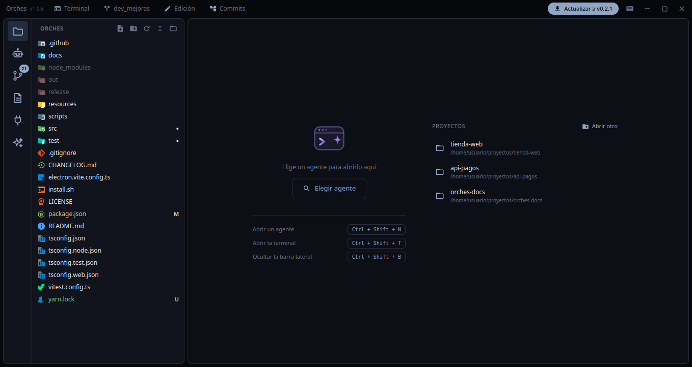
Tutti is a desktop app for Linux and Windows (macOS is coming later). It does not need administrator rights.
Linux
curl -fsSL https://github.com/cyansaju-sys/tutti/releases/latest/download/install.sh | bashIt downloads the AppImage of the latest release to ~/.local/share/tutti/, creates the tutti command in ~/.local/bin and the application menu entry. If libfuse2 is missing (on Arch, fuse2) it still works, it just opens more slowly.
| Command | What it does |
|---|---|
install.sh | Installs or reinstalls the latest version |
install.sh --version 1.0.8 | Installs a specific version |
install.sh --uninstall | Removes it (your settings in ~/.config/tutti are kept) |
Variables: TUTTI_HOME (where the AppImage is stored) and TUTTI_REPO (user/repository).
Windows
Download Tutti-Setup-X.Y.Z.exe from the latest release and open it. It installs for your user and creates the shortcut.
Updates
The app updates itself. When a new release comes out, the Update to vX.Y.Z button appears at the top right: clicking it downloads the version, verifies its hash and restarts to apply it. The first time you open the app after updating, a dialog tells you what is new (or what changed in every version you skipped); you can see it again by clicking the version number next to the app name.
Primeros pasosFirst steps
- Abre un proyecto. Si no hay ninguno, el árbol de archivos te lo pide; también puedes elegir uno de los proyectos recientes de la pantalla de inicio o usar el botón Abrir otro proyecto de la cabecera del árbol.
- Abre un agente con Ctrl+Shift+N. Aparecen los que Tutti encontró instalados; escribe para filtrar y pulsa Enter.
- Trabaja como siempre. Cada agente es su propia terminal dentro de la ventana. Puedes abrir varios, y también editar archivos, mirar git o añadir servidores MCP mientras trabajan.
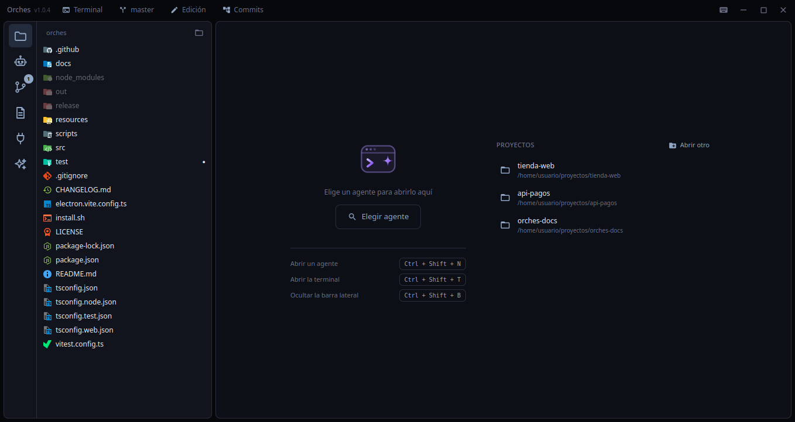
Sin agentes abiertos, el espacio central es la pantalla de inicio: el botón Elegir agente, los atajos básicos y tus proyectos recientes (con Abrir otro y una ✕ para quitar uno del historial). Si abres un archivo sin agentes, el editor ocupa todo el espacio. F1 muestra la lista completa de atajos.
La ventana
| Zona | Qué contiene |
|---|---|
| Barra de título | Terminal, rama actual, permiso de edición, commits, versión, botón de actualización, nueva ventana y atajos |
| Barra lateral | Archivos, Buscar, Agentes, Git, Contexto, MCP y Consumo; abajo, la tuerca de ajustes |
| Centro | Editor con pestañas a la izquierda y los agentes en cuadrícula a la derecha |
| Panel inferior | Las terminales, con su lista a la derecha cuando hay varias |
La barra lateral se pliega a solo iconos con Ctrl+Shift+B o con doble clic en un icono. Los divisores se arrastran para cambiar el tamaño.
- Open a project. If there is none, the file tree asks for one; you can also pick one of the recent projects on the start screen or use the Open another project button in the tree header.
- Open an agent with Ctrl+Shift+N. The ones Tutti found installed appear; type to filter and press Enter.
- Work as usual. Each agent is its own terminal inside the window. You can open several, and also edit files, look at git or add MCP servers while they work.
With no agents open, the central area is the start screen: the Choose agent button, the basic shortcuts and your recent projects (with Open another and an ✕ to remove one from the history). If you open a file with no agents, the editor takes all the space. F1 shows the full list of shortcuts.
The window
| Area | What it contains |
|---|---|
| Title bar | Terminal, current branch, edit permission, commits, version, update button, new window and shortcuts |
| Sidebar | Files, Search, Agents, Git, Context, MCP and Usage; at the bottom, the settings gear |
| Center | Tabbed editor on the left and the agents in a grid on the right |
| Bottom panel | The terminals, with their list on the right when there are several |
The sidebar folds to icons only with Ctrl+Shift+B or by double-clicking an icon. Dividers can be dragged to resize.
Archivos y editorFiles and editor
El árbol usa los íconos de Material Icon Theme y muestra la letra de git en lo que cambió (M modificado, A/U nuevo, D borrado). Los archivos se abren en pestañas, ya editables, con colores, marcas de git en el margen (verde añadido, azul modificado, rojo borrado), autocompletado y recarga automática si otra herramienta cambia el archivo y aquí no hay cambios sin guardar.
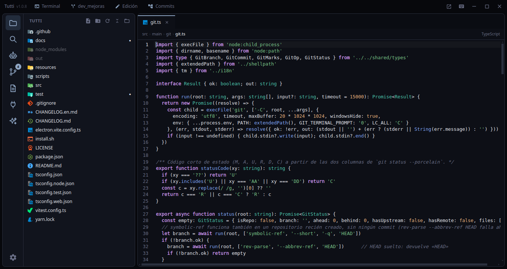
Editar
- Ctrl+S guarda; Ctrl+W cierra la pestaña (pregunta si hay cambios sin guardar).
- El permiso Edición de la barra de título (o Ctrl+Shift+L) deja los archivos en solo lectura. Los archivos de más de 1 MB o que no son UTF-8 siempre se abren como solo lectura.
- Autocompletado con Ctrl+Espacio; Enter o Tab aceptan y Esc cierra la sugerencia.
- Resaltado de sintaxis para JavaScript/TypeScript (y JSX), Python, SQL, JSON, CSS, HTML, Markdown, XML, Vue y más.
El árbol
La cabecera tiene los botones Nuevo archivo, Nueva carpeta, Actualizar, Contraer todo y Abrir otro proyecto. También puedes pulsar en un espacio vacío para crear algo en la raíz. El nombre se escribe en el propio árbol: Enter crea y Esc cancela. Con el árbol enfocado se navega con las flechas (→ abre, ← cierra o sube, Enter abre) y la fila marcada sigue al ratón.
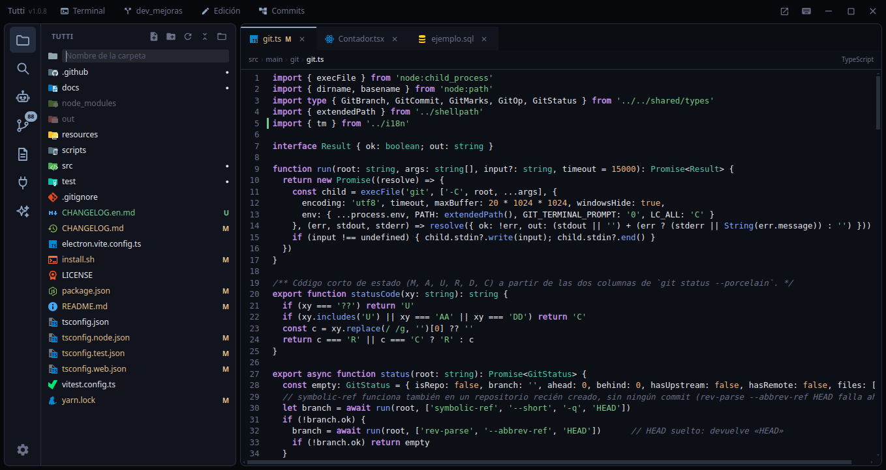
Clic derecho (o la tecla de menú)
| Acción | Qué hace |
|---|---|
| Enviar al agente | Escribe la ruta en el prompt del agente activo (@ruta en los que la entienden), sin pulsar Enter |
| Nuevo archivo / Nueva carpeta | Los crea dentro de la carpeta; el archivo se abre en el editor |
| Renombrar | Las pestañas abiertas siguen el cambio de nombre |
| Copiar ruta / ruta relativa | Al portapapeles |
| Borrar | Pide confirmación y lo manda a la papelera (se puede recuperar) |
Cada proyecto recuerda lo suyo
Al cambiar de proyecto se cierran sus agentes, terminales y archivos (si hay cambios sin guardar, antes pregunta). Al volver a uno ya conocido se recupera la pestaña de la barra lateral y los archivos que tenías abiertos.
The tree uses Material Icon Theme icons and shows the git letter next to what changed (M modified, A/U new, D deleted). Files open in tabs, already editable, with colors, git marks in the gutter (green added, blue modified, red deleted), autocomplete and automatic reload if another tool changes the file and there are no unsaved changes here.
Editing
- Ctrl+S saves; Ctrl+W closes the tab (it asks if there are unsaved changes).
- The Editing permission in the title bar (or Ctrl+Shift+L) makes files read-only. Files larger than 1 MB or not in UTF-8 always open read-only.
- Autocomplete with Ctrl+Space; Enter or Tab accept and Esc closes the suggestion.
- Syntax highlighting for JavaScript/TypeScript (and JSX), Python, SQL, JSON, CSS, HTML, Markdown, XML, Vue and more.
The tree
The header has the buttons New file, New folder, Refresh, Collapse all and Open another project. You can also click an empty space to create something at the root. The name is typed in the tree itself: Enter creates and Esc cancels. With the tree focused you can navigate with the arrows (→ opens, ← closes or goes up, Enter opens) and the marked row follows the mouse.
Right click (or the menu key)
| Action | What it does |
|---|---|
| Send to agent | Types the path into the active agent's prompt (@path for the ones that understand it), without pressing Enter |
| New file / New folder | Creates them inside the folder; the file opens in the editor |
| Rename | Open tabs follow the rename |
| Copy path / relative path | To the clipboard |
| Delete | Asks for confirmation and sends it to the trash (recoverable) |
Each project remembers its own
Switching project closes its agents, terminals and files (if there are unsaved changes, it asks first). Returning to a known project restores the sidebar tab and the files you had open.
Buscar y reemplazarFind and replace
En el archivo abierto
Ctrl+F abre un cuadro flotante arriba a la derecha del editor con distinguir mayúsculas (Aa), palabra completa (ab) y expresión regular (.*), el contador («3 de 12») y los botones anterior / siguiente. Ctrl+H añade la fila de reemplazo (Reemplazar y Todo). Enter / Shift+Enter recorren las coincidencias y Esc cierra.
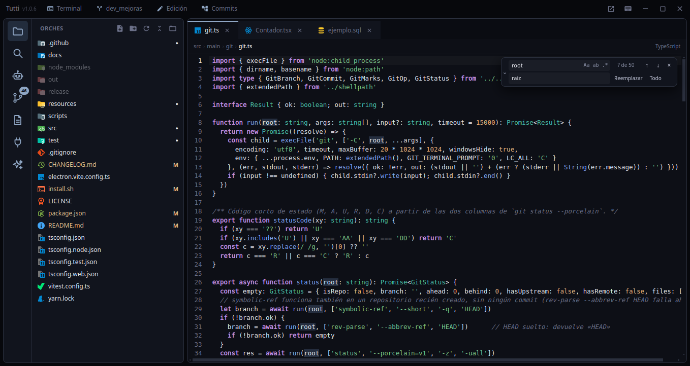
En todo el proyecto
El apartado Buscar de la barra lateral (Ctrl+Shift+F) agrupa los resultados por archivo; al pulsar uno se abre en esa línea con la coincidencia seleccionada.
- Filtros acepta globs separados por comas para incluir y excluir:
*.ts, src/**·*.test.ts, docs/. - Respeta el
.gitignoresi el proyecto usa git, y salta binarios y archivos de más de 1 MB. - Se corta a las 5000 coincidencias o 500 archivos (el contador muestra «+»).
Reemplazar en el proyecto
Ctrl+Shift+H (o la flecha a la izquierda del campo) despliega el campo de reemplazo. Se puede reemplazar por archivo o todo a la vez, siempre pidiendo confirmación. Con expresión regular admite $1, $& y $$; conserva los fines de línea y salta los archivos abiertos con cambios sin guardar para no pisarlos.
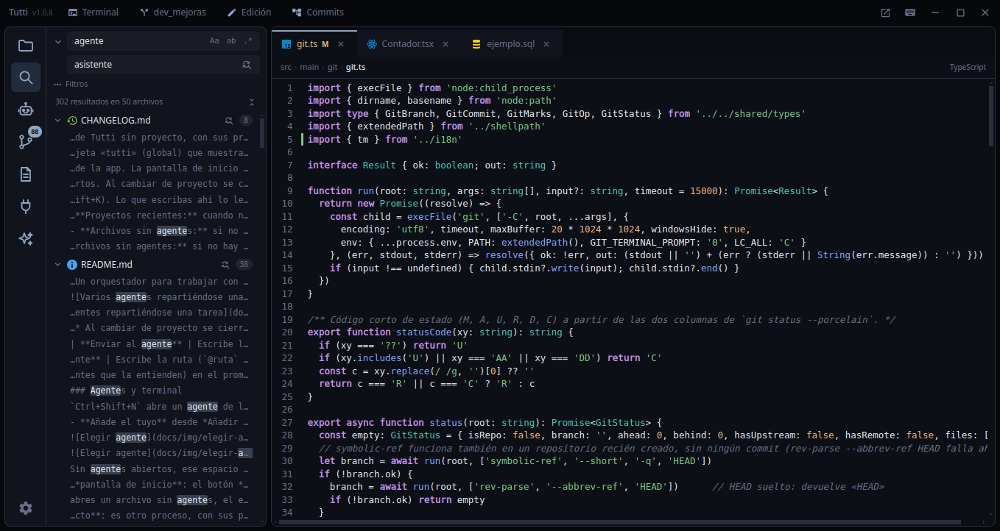
In the open file
Ctrl+F opens a floating box at the top right of the editor with match case (Aa), whole word (ab) and regular expression (.*), the counter (“3 of 12”) and the previous / next buttons. Ctrl+H adds the replace row (Replace and All). Enter / Shift+Enter go through the matches and Esc closes it.
Across the project
The Search section of the sidebar (Ctrl+Shift+F) groups results by file; clicking one opens it at that line with the match selected.
- Filters accepts comma-separated globs to include and exclude:
*.ts, src/**·*.test.ts, docs/. - It respects
.gitignoreif the project uses git, and skips binaries and files larger than 1 MB. - It stops at 5000 matches or 500 files (the counter shows “+”).
Replace across the project
Ctrl+Shift+H (or the arrow to the left of the field) shows the replace field. You can replace per file or all at once, always asking for confirmation. With a regular expression it supports $1, $& and $$; it keeps line endings and skips open files with unsaved changes so it never overwrites them.
Agentes y terminalesAgents and terminals
Ctrl+Shift+N abre un agente de los instalados. Tutti los busca en el PATH, en el de tu shell de login y en las carpetas habituales, así que funciona aunque lances la app desde el menú. Ctrl+Shift+T abre una shell en el proyecto como sección aparte, con varias terminales en una lista a la derecha.
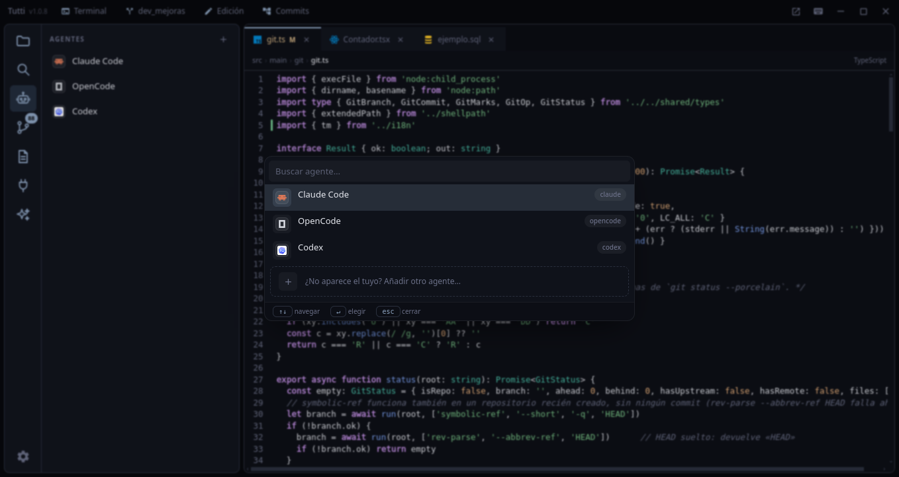
Agentes que detecta
Claude Code, OpenCode, Codex, Gemini CLI, Aider, Cursor, Goose, Amp, Qwen Code, Copilot CLI, Droid, Kimi, Crush, Kilo, Cline, Plandex, Auggie, Forge, Mistral Vibe y Warp, cada uno con su logo. Antigravity (agy) se añade a mano.
Añadir el tuyo
En ¿No aparece el tuyo? Añadir otro agente… escribes un nombre y el comando (con argumentos si hace falta), o eliges uno de los ejecutables que la app encuentra en tus carpetas bin. Los propios sin logo llevan una insignia generada con su inicial. Se quitan desde la lista de agentes.
Terminales
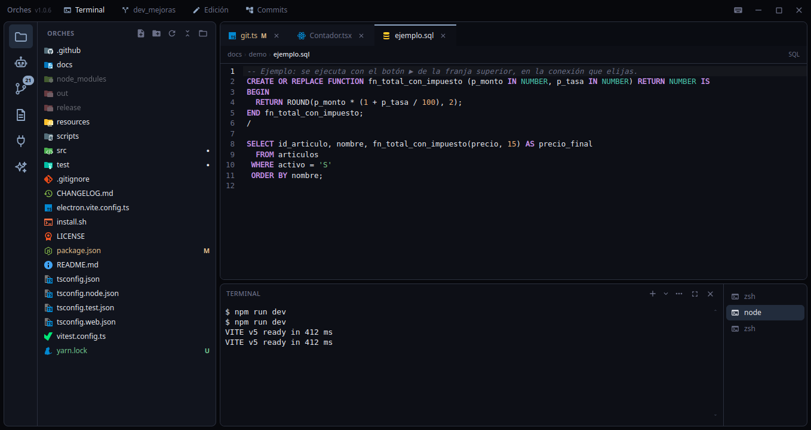
- Varias terminales a la vez, en una lista a la derecha del panel; el panel se puede maximizar y cerrar entero.
- Si un proceso no arranca o termina, un aviso lo explica (comando no encontrado, señal, código de salida).
- Con varios agentes, se reparten en cuadrícula y Ctrl+AvPág / RePág salta de uno a otro.
Copiar y pegar
| Atajo | Qué hace |
|---|---|
| Ctrl+C | Copia si hay texto seleccionado; si no, sigue siendo «interrumpir» |
| Ctrl+Shift+C | Copia siempre |
| Ctrl+V, Ctrl+Shift+V, Shift+Insert | Pegan el texto del portapapeles (varias líneas incluidas) |
| Clic derecho | Menú con Copiar, Pegar y Seleccionar todo |
Si el portapapeles no tiene texto (una captura, por ejemplo), Ctrl+V se lo deja al agente, que la lee él mismo.
Varias ventanas
El botón de la barra de título (o Nueva ventana vacía en el menú del lanzador, con clic derecho sobre el icono en Linux) abre otra ventana sin proyecto. Es otro proceso, con sus propios agentes, su servidor de tareas y su proyecto. Los ajustes se comparten, así que lo último que abras en cualquier ventana es lo que se reabre al iniciar. La ventana nueva se abre en el monitor donde está el cursor.
Ctrl+Shift+N opens an installed agent. Tutti looks for them in the PATH, in your login shell's one and in the usual folders, so it works even if you launch the app from the menu. Ctrl+Shift+T opens a shell in the project as a separate section, with several terminals in a list on the right.
Agents it detects
Claude Code, OpenCode, Codex, Gemini CLI, Aider, Cursor, Goose, Amp, Qwen Code, Copilot CLI, Droid, Kimi, Crush, Kilo, Cline, Plandex, Auggie, Forge, Mistral Vibe and Warp, each with its logo. Antigravity (agy) is added by hand.
Add your own
In Not listed? Add another agent… you type a name and the command (with arguments if needed), or pick one of the executables the app finds in your bin folders. Custom ones without a logo get a badge generated from their initial. They are removed from the agents list.
Terminals
- Several terminals at once, in a list on the right of the panel; the panel can be maximized and closed as a whole.
- If a process does not start or ends, a notice explains it (command not found, signal, exit code).
- With several agents, they are laid out in a grid and Ctrl+Page Down / Page Up jumps between them.
Copy and paste
| Shortcut | What it does |
|---|---|
| Ctrl+C | Copies if text is selected; otherwise it is still “interrupt” |
| Ctrl+Shift+C | Always copies |
| Ctrl+V, Ctrl+Shift+V, Shift+Insert | Paste the clipboard text (multi-line included) |
| Right click | Menu with Copy, Paste and Select all |
If the clipboard has no text (a screenshot, for example), Ctrl+V is left to the agent, which reads it itself.
Several windows
The title bar button (or New empty window in the launcher menu, right-clicking the icon on Linux) opens another window with no project. It is another process, with its own agents, its own task server and its own project. Settings are shared, so the last thing you open in any window is what reopens at startup. The new window opens on the monitor where the cursor is.
Reparto de tareasTask delegation
Tutti abre un servidor MCP local (solo en 127.0.0.1, con un token distinto en cada ejecución) y conecta a cada agente a él con cuatro herramientas:
| Herramienta | Para qué sirve |
|---|---|
list_agents | Ver los agentes abiertos y los instalados, con su modelo, nivel y límite de uso |
delegate_task | Mandar una tarea a un agente abierto o pedir uno nuevo (incluso del mismo tipo) |
wait_agent | Esperar a que un agente termine y recibir las últimas líneas de su pantalla |
read_agent_output | Leer la pantalla de un agente y saber si sigue ocupado |
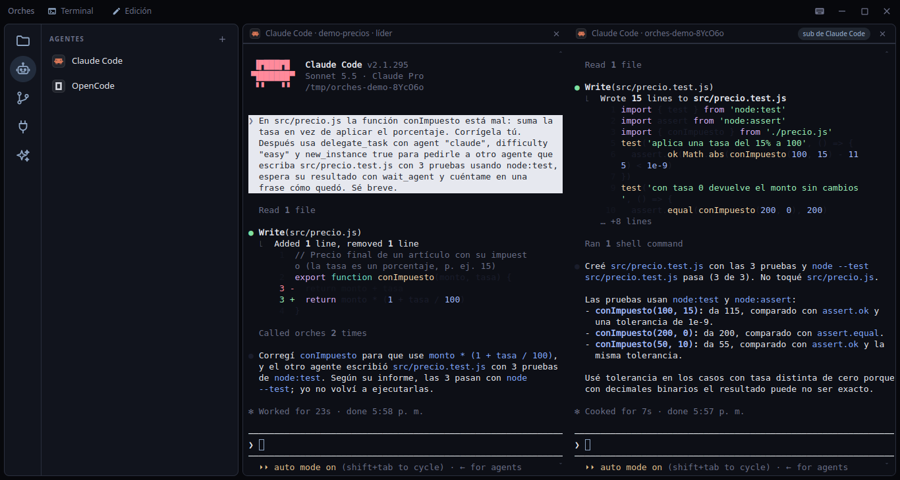
El primer agente que abres es el líder. Los que él (u otro) abre salen en su propio panel marcado «sub de …», y el apartado Agentes de la barra lateral lista las tareas delegadas con su estado (trabajando, terminada, cerrada), modelo, dificultad y duración. Cuando un agente termina, Tutti avisa al que se la mandó.
Asigna según la capacidad
Si el agente pasa difficulty (easy, medium, hard), Tutti revisa la lista, comprueba el nivel del modelo (basic, standard, advanced) y su límite de uso, y elige el más adecuado: el justo para la tarea (no gasta uno avanzado en algo fácil), libre antes que ocupado y que no tenga el límite agotado. Con agent: "auto" elige él; si el pedido no tiene capacidad suficiente se rechaza y se propone otro (force lo mantiene). También se puede pedir un model concreto para los agentes que lo permiten al abrirse.
Cómo se conecta cada agente
| Agente | Mecanismo |
|---|---|
| Claude Code | --mcp-config con la URL y la clave de su sesión, y las herramientas ya permitidas |
| OpenCode | Variable OPENCODE_CONFIG_CONTENT; en 2.x se lanza con --standalone para no mezclar su configuración con la de otros OpenCode |
| Codex | -c mcp_servers.tutti.url=… y la clave por variable de entorno: no se toca su config.toml |
| Antigravity | No admite configuración por proceso: Tutti registra un servidor «tutti» en ~/.gemini/config/mcp_config.json (un pequeño puente en <config>/tutti/mcp-bridge.mjs) y a cada panel le pasa la dirección y la clave por entorno. Fuera de Tutti ese servidor no ofrece herramientas. Si Antigravity pide permiso la primera vez, apruébalo |
Se desactiva con "orchestration": false en settings.json. La tarjeta tutti de la pestaña MCP muestra a qué agentes llega.
Tutti opens a local MCP server (only on 127.0.0.1, with a different token on every run) and connects every agent to it with four tools:
| Tool | What it is for |
|---|---|
list_agents | See the open and installed agents, with their model, level and usage limit |
delegate_task | Hand a task to an open agent or ask for a new one (even of the same type) |
wait_agent | Wait for an agent to finish and get the last lines of its screen |
read_agent_output | Read an agent's screen and know whether it is still busy |
The first agent you open is the leader. The ones it (or another) opens appear in their own panel tagged “sub of …”, and the Agents section of the sidebar lists delegated tasks with their status (working, done, closed), model, difficulty and duration. When an agent finishes, Tutti notifies the one that sent the task.
Assigns by capability
If the agent passes difficulty (easy, medium, hard), Tutti reviews the list, checks the model level (basic, standard, advanced) and its usage limit, and picks the most suitable: just enough for the task (it does not spend an advanced one on something easy), idle before busy, and not out of limit. With agent: "auto" it chooses; if the requested one lacks enough capability it is rejected and another is suggested (force keeps it). A specific model can also be requested for agents that allow it on launch.
How each agent connects
| Agent | Mechanism |
|---|---|
| Claude Code | --mcp-config with the URL and key of its session, and the tools already allowed |
| OpenCode | OPENCODE_CONFIG_CONTENT variable; on 2.x it is launched with --standalone so its configuration does not mix with other OpenCode instances |
| Codex | -c mcp_servers.tutti.url=… and the key through an environment variable: its config.toml is untouched |
| Antigravity | It does not support per-process configuration: Tutti registers a “tutti” server in ~/.gemini/config/mcp_config.json (a small bridge at <config>/tutti/mcp-bridge.mjs) and passes each panel the address and key through the environment. Outside Tutti that server offers no tools. If Antigravity asks for permission the first time, approve it |
It is disabled with "orchestration": false in settings.json. The tutti card in the MCP tab shows which agents it reaches.
Contexto del proyectoProject context
El apartado Contexto (Ctrl+Shift+K) guarda un texto sobre el proyecto —qué es, cómo se ejecuta, convenciones— que leen los agentes que abras en él: Claude Code lo recibe como parte de su prompt de sistema y OpenCode como archivo de instrucciones. Funciona también si el agente se abre en una subcarpeta y sin el reparto de tareas.
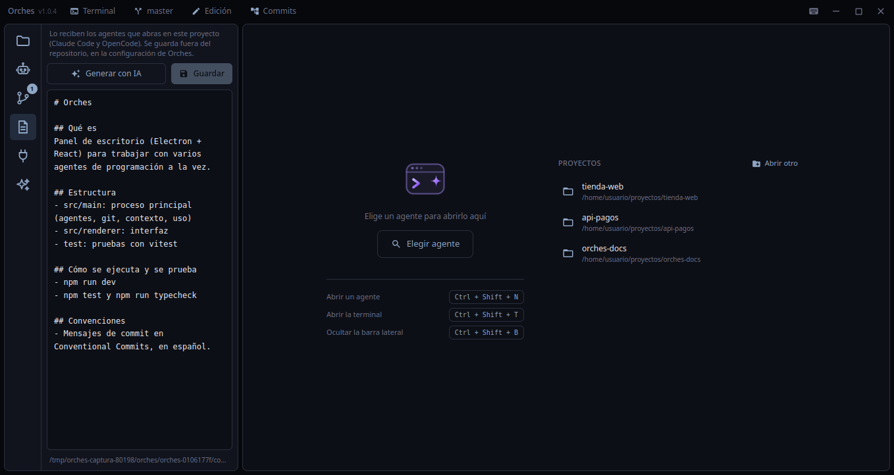
- Vive fuera del repositorio, en
<config>/tutti/<proyecto>-<huella>/contexto.md, y se guarda solo (o con Guardar). - La plantilla inicial sin tocar no se envía a los agentes.
- Generar con IA lo redacta un agente a partir de un resumen pequeño del proyecto (estructura,
package.json, inicio del README, últimos commits), sin dejarle explorar, para gastar muy pocos tokens. Con Claude usa el modelo pequeñohaiku; si ningún agente responde arma un borrador con reglas. Se escribe en el idioma de la interfaz y se cancela al cambiar de apartado.
The Context section (Ctrl+Shift+K) stores a text about the project —what it is, how to run it, conventions— that the agents you open in it read: Claude Code receives it as part of its system prompt and OpenCode as an instructions file. It works even if the agent opens in a subfolder and without task delegation.
- It lives outside the repository, at
<config>/tutti/<project>-<hash>/contexto.md, and saves itself (or with Save). - The untouched starting template is not sent to the agents.
- Generate with AI has an agent write it from a small summary of the project (structure,
package.json, start of the README, latest commits), without letting it explore, to spend very few tokens. With Claude it uses the smallhaikumodel; if no agent answers it builds a draft with rules. It is written in the interface language and cancelled when you leave the section.
Servidores MCP y tiendaMCP servers and store
Lee, añade y quita los servidores de Claude Code, OpenCode, Gemini CLI, Codex y Antigravity (globales, del proyecto y .mcp.json) usando la CLI de cada agente para respetar su formato.
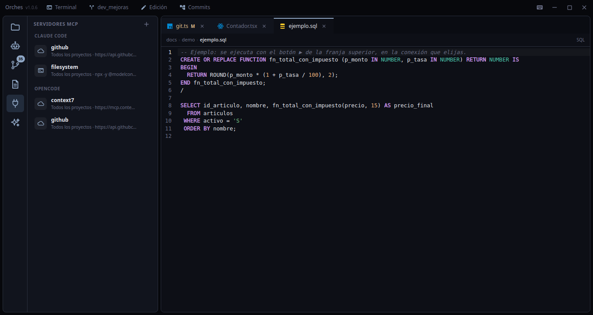
- Un servidor, una tarjeta. Al abrirla ves en qué agentes está aplicado (Aplicado en), su comando o URL, cabeceras y variables (los secretos ocultos hasta que lo pides) y dónde se guarda. Puedes copiarlo a otro agente o quitarlo de uno solo.
- La papelera de la tarjeta lo quita de todos los agentes, pidiendo confirmación.
- + abre Añadir servidor MCP: remoto (URL y cabeceras) o local (comando, argumentos y variables), los agentes de destino y el alcance (todos los proyectos o solo este). Codex y Antigravity solo guardan servidores globales.
- La tarjeta tutti es el servidor de la propia app (el reparto de tareas) y muestra a qué agentes llega.
- Las secciones Tutti, Instalados, Recomendados y Disponibles se pliegan y recuerdan su estado.
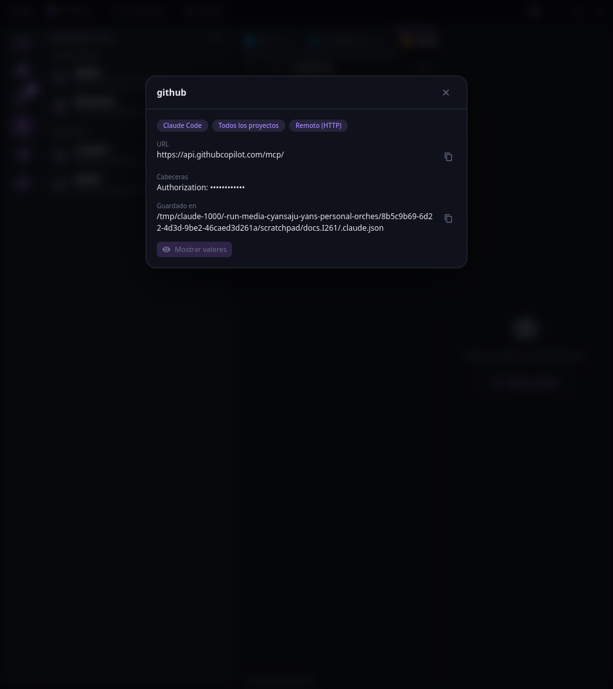
Tienda
El buscador de arriba consulta el registro oficial de MCP (registry.modelcontextprotocol.io) con el aspecto de las extensiones de VS Code: icono, nombre, descripción, quién lo publica, si es local o remoto y el botón Instalar. Los más conocidos (Context7, Playwright, GitHub, Chrome DevTools, Notion, Figma, Linear, Atlassian, Sentry, Supabase, Stripe, Cloudflare, Vercel, Serena) salen primero en Recomendados; al buscar, lo que mejor coincide va arriba.
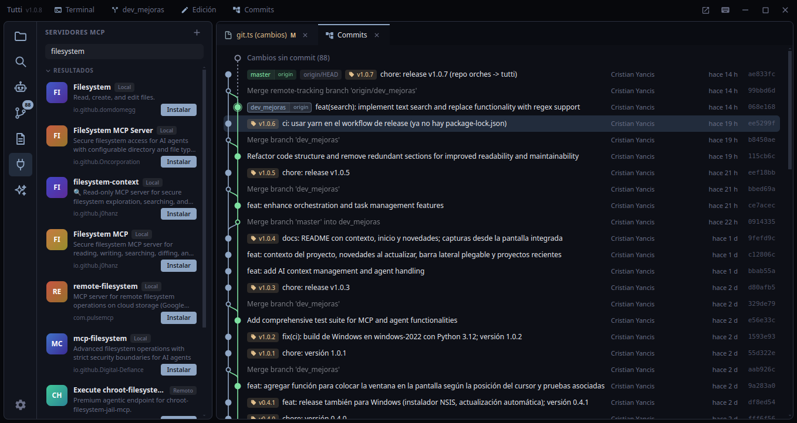
- Al pulsar un servidor se abre su ficha: qué es, quién lo publica, versión, repositorio, el comando exacto que se ejecutará y las variables que pide.
- Continuar abre Añadir servidor MCP ya relleno; completas lo que falte y eliges los agentes.
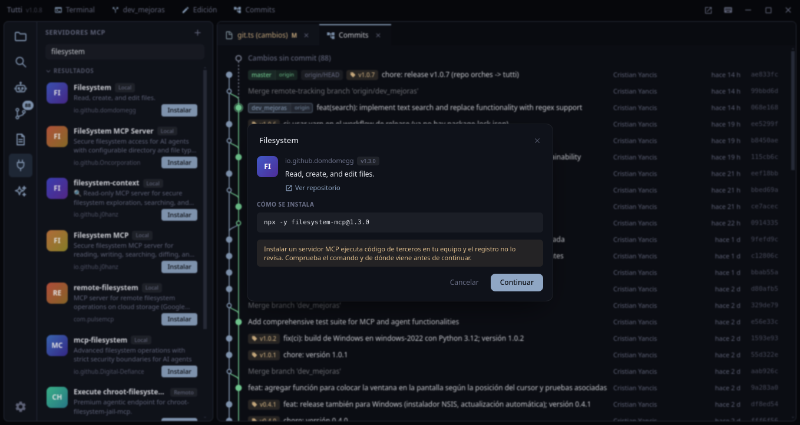
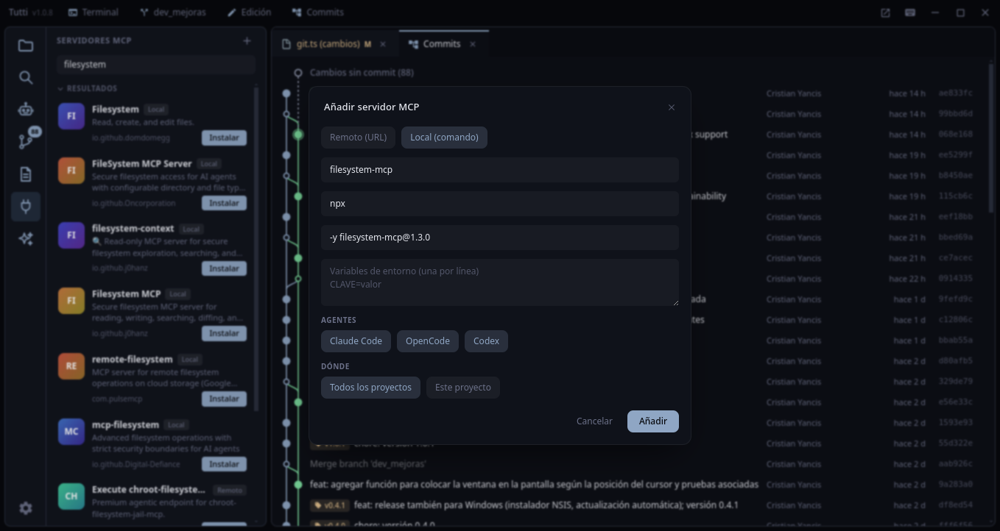
Solo se ofrece lo que Tutti sabe instalar: paquetes npm (con npx), pypi (con uvx) y servidores remotos por URL (streamable-http o sse). Necesitas node o uv instalados para los locales.
It reads, adds and removes the servers of Claude Code, OpenCode, Gemini CLI, Codex and Antigravity (global, project and .mcp.json) using each agent's CLI to respect its format.
- One server, one card. Opening it shows which agents it is applied to (Applied to), its command or URL, headers and variables (secrets hidden until you ask) and where it is stored. You can copy it to another agent or remove it from just one.
- The card's trash can removes it from every agent, asking for confirmation.
- + opens Add MCP server: remote (URL and headers) or local (command, arguments and variables), the target agents and the scope (all projects or just this one). Codex and Antigravity only store global servers.
- The tutti card is the app's own server (task delegation) and shows which agents it reaches.
- The Tutti, Installed, Recommended and Available sections fold and remember their state.
Store
The search box at the top queries the official MCP registry (registry.modelcontextprotocol.io) styled like VS Code extensions: icon, name, description, who publishes it, whether it is local or remote and the Install button. The best-known ones (Context7, Playwright, GitHub, Chrome DevTools, Notion, Figma, Linear, Atlassian, Sentry, Supabase, Stripe, Cloudflare, Vercel, Serena) come first under Recommended; when searching, the best match goes on top.
- Clicking a server opens its page: what it is, who publishes it, version, repository, the exact command that will run and the variables it asks for.
- Continue opens Add MCP server already filled in; you complete what is missing and pick the agents.
Only what Tutti knows how to install is offered: npm packages (with npx), pypi (with uvx) and remote servers by URL (streamable-http or sse). You need node or uv installed for the local ones.
Consumo e historialUsage and history
El apartado Consumo (Ctrl+Shift+U) muestra, por agente instalado:
- Los tokens de la ventana de 5 h de Claude, de hoy, de 7 días y totales.
- Los porcentajes reales de límite que da Anthropic (sesión de 5 h, semanal, por modelo) y cuándo se reinician. Se consultan una vez al abrir la pestaña, con la sesión de Claude Code; si caducó, basta abrir Claude Code una vez.
- El consumo de OpenCode, y de Antigravity el historial de conversaciones (no guarda tokens en local).
Historial del proyecto
Lista las sesiones de IA del proyecto abierto. Desde el menú de cada una puedes retomarla (en los agentes que lo permiten), renombrarla (solo cambia el nombre que ves en Tutti) o borrarla; también hay Borrar historial para todas.
The Usage section (Ctrl+Shift+U) shows, for each installed agent:
- The tokens of Claude's 5 h window, today, 7 days and total.
- The real limit percentages Anthropic reports (5 h session, weekly, per model) and when they reset. They are queried once when you open the tab, using the Claude Code session; if it expired, opening Claude Code once is enough.
- OpenCode usage, and for Antigravity the conversation history (it does not store tokens locally).
Project history
It lists the AI sessions of the open project. From each one's menu you can resume it (in the agents that allow it), rename it (it only changes the name you see in Tutti) or delete it; there is also Clear history for all of them.
GitGit
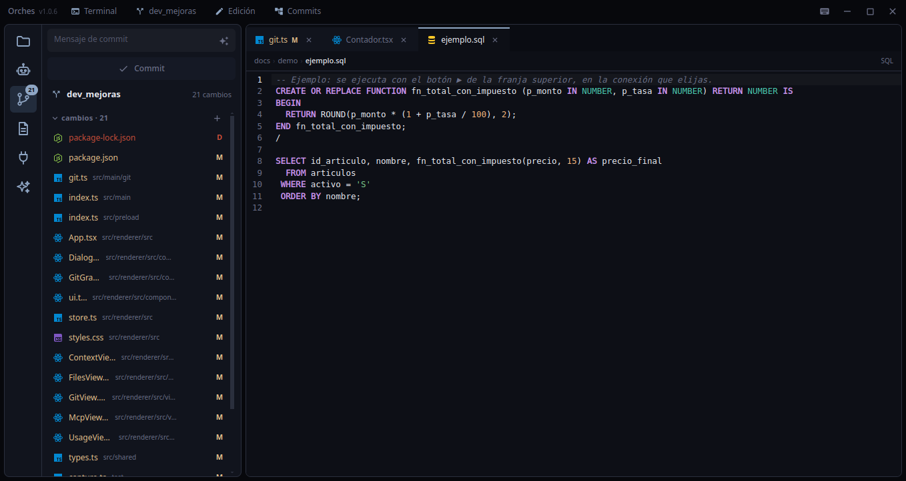
Cambios y commit
- Cambios con preparar / quitar, y secciones preparados y cambios que se pliegan. Al pulsar un archivo se abre su comparación.
- Mensaje de commit con IA. La ✨ del campo le pide a un agente instalado un mensaje en Conventional Commits a partir de lo que tienes preparado, y lo deja para que lo revises. Se ve qué agente lo redacta. Si ninguno responde, se arma con reglas sencillas sobre los archivos tocados.
- Un solo botón, un paso por pulsación. Con mensaje hace Commit; después pasa a Push o, si faltan cambios del remoto, a Pull (solo avance simple, nunca une a ciegas), con una animación del progreso. Sin repositorio remoto solo ofrece commit. Funciona también en un repositorio recién creado, sin commits.
Ramas
Ctrl+Shift+G abre Git; el chip con el nombre de la rama, en la barra de título, abre el selector: un panel al estilo de VS Code con la fecha y el último commit de cada rama, búsqueda, cambio de rama (local o remota), crear una nueva (desde la actual o a partir de… otra) y desproteger para ir a una rama o commit sin crear rama.
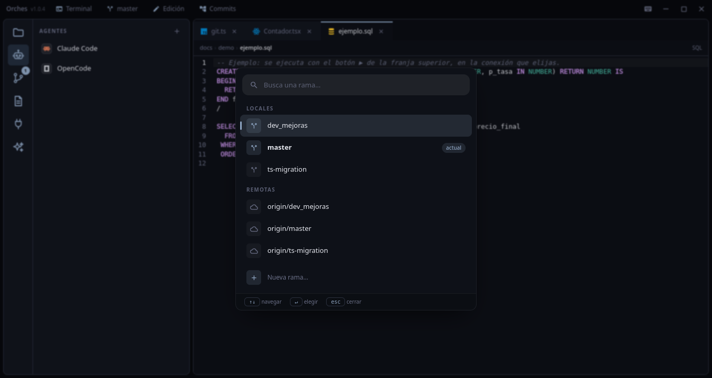
Comparar cambios
Una pestaña con la comparación en dos columnas (lo anterior a la izquierda, lo nuevo a la derecha), con las líneas añadidas y borradas resaltadas y los tramos largos sin cambios plegados.
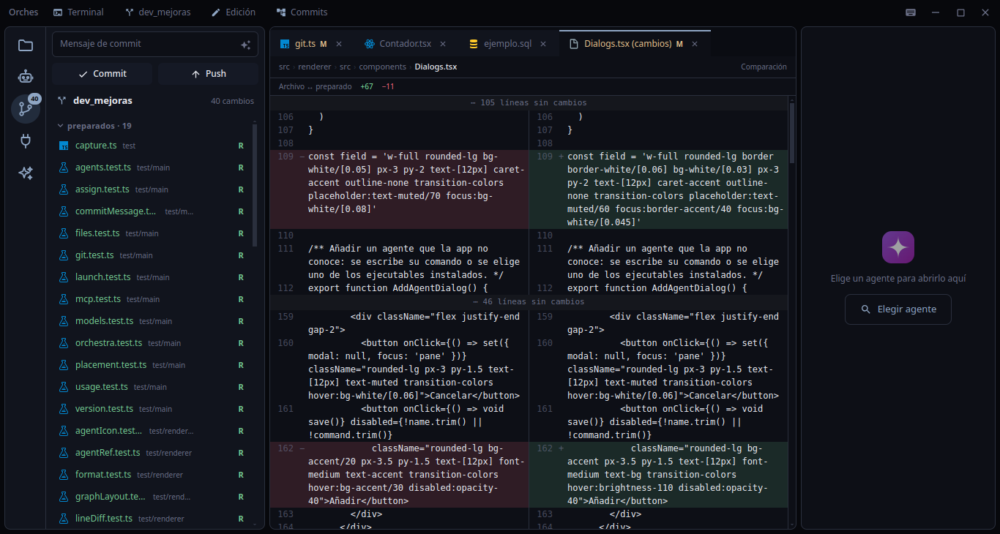
Commits
El chip Commits abre el grafo de todas las ramas, con las etiquetas de rama, remota y tag, los merges atenuados y una fila de cambios sin commit que lleva a la sección Git.
- Clic en un commit: debajo salen sus datos y los archivos que cambió con
+N −N; en un merge, lo que trajo la rama unida. Al pulsar un archivo se abre su comparación. - Clic derecho: etiqueta, crear rama aquí, cambiar de rama, cherry-pick, revertir, unir (con no-ff, squash y no commit), rebase, reset (suave, mixto o duro) y copiar hash o mensaje. Las operaciones que cambian el historial piden confirmación, y si dan conflictos se cancelan sin dejar el repositorio a medias.
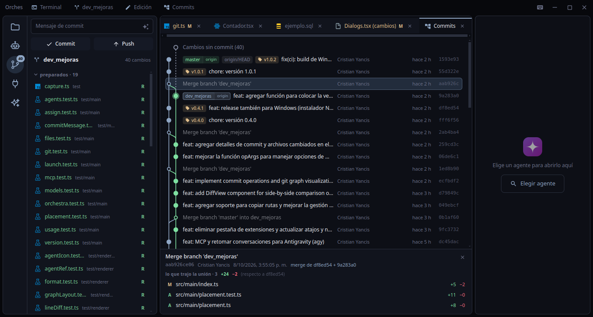
Changes and commit
- Changes with stage / unstage, and staged and changes sections that fold. Clicking a file opens its comparison.
- AI commit message. The ✨ in the field asks an installed agent for a Conventional Commits message based on what you have staged, and leaves it for you to review. You can see which agent writes it. If none answers, it is built with simple rules over the touched files.
- One button, one step per press. With a message it does Commit; afterwards it becomes Push or, if the remote has new changes, Pull (fast-forward only, it never merges blindly), with a progress animation. Without a remote it only offers commit. It also works in a freshly created repository with no commits.
Branches
Ctrl+Shift+G opens Git; the chip with the branch name in the title bar opens the picker: a VS Code-style panel with the date and last commit of each branch, search, switching branch (local or remote), creating a new one (from the current or from… another) and checkout detached to go to a branch or commit without creating a branch.
Comparing changes
A tab with the two-column comparison (before on the left, after on the right), with added and deleted lines highlighted and long unchanged stretches folded.
Commits
The Commits chip opens the graph of every branch, with branch, remote and tag labels, dimmed merges and an uncommitted changes row that leads to the Git section.
- Click a commit: below you get its data and the files it changed with
+N −N; for a merge, what the merged branch brought. Clicking a file opens its comparison. - Right click: tag, create branch here, switch branch, cherry-pick, revert, merge (with no-ff, squash and no commit), rebase, reset (soft, mixed or hard) and copy hash or message. Operations that change history ask for confirmation, and if they hit conflicts they are cancelled without leaving the repository half done.
Apariencia e idiomaAppearance and language
La tuerca de abajo en la barra lateral abre los ajustes, con dos submenús que se abren al pasar el ratón (muestran el valor actual):
- Tema: oscuro, claro o Automático (sigue al del sistema). El claro usa tonos suaves, sin blanco puro, para no cansar la vista. Cambia también el editor, los colores del código y las terminales.
- Idioma: Español, Inglés o Automático (el del sistema; si no es español, inglés). Cambia toda la interfaz al instante y se recuerda. El contexto del proyecto y los mensajes de error también salen en tu idioma, y la IA redacta el contexto en él.
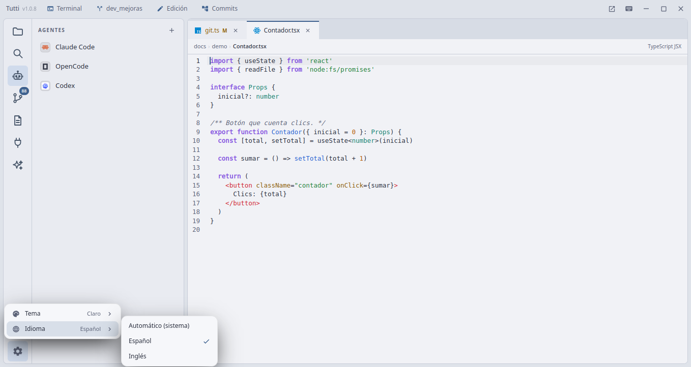
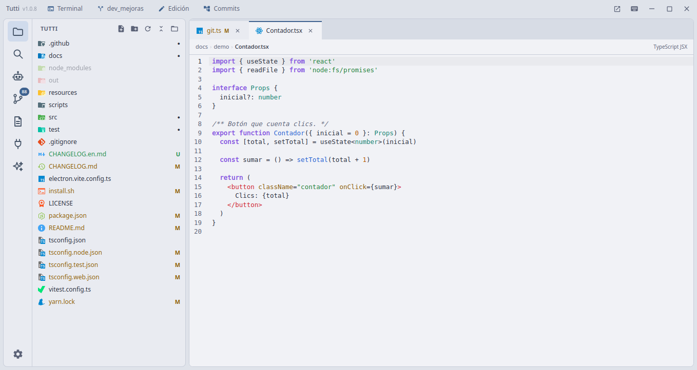
Los textos de la interfaz están en src/shared/locales/es.json y en.json; si falta una clave en inglés, no compila.
The gear at the bottom of the sidebar opens the settings, with two submenus that open on hover (they show the current value):
- Theme: dark, light or Automatic (follows the system). The light one uses soft tones, no pure white, to go easy on your eyes. It also changes the editor, the code colors and the terminals.
- Language: Spanish, English or Automatic (the system's; if it is not Spanish, English). It changes the whole interface instantly and is remembered. The project context and error messages also come in your language, and the AI writes the context in it.
The interface texts live in src/shared/locales/es.json and en.json; if a key is missing in English, it does not compile.
Atajos de tecladoKeyboard shortcuts
F1 muestra la lista dentro de la app. Los atajos globales llevan Ctrl+Shift para no chocar con las teclas que usan los agentes y las shells.
| Atajo | Acción |
|---|---|
| Ctrl+S / Ctrl+W | Guardar / cerrar el archivo abierto |
| Ctrl+F / Ctrl+H | Buscar / reemplazar en el archivo abierto |
| Ctrl+Espacio | Pedir autocompletado |
| Ctrl+Shift+F / H | Buscar / buscar y reemplazar en el proyecto |
| Ctrl+Shift+L | Permitir o bloquear la edición |
| Ctrl+Shift+N | Abrir un agente |
| Ctrl+Shift+T | Mostrar u ocultar la terminal |
| Ctrl+Shift+W | Cerrar el panel activo |
| Ctrl+AvPág / RePág | Panel siguiente / anterior |
| Ctrl+Shift+B | Mostrar u ocultar la barra lateral |
| Ctrl+Shift+E · A · G · K · X · U | Archivos · Agentes · Git · Contexto · MCP · Consumo |
| Ctrl+C / V | En terminales y agentes: copiar (con texto seleccionado) / pegar. También Ctrl+Shift+C, Ctrl+Shift+V y Shift+Insert |
| F1 | Esta ayuda dentro de la app |
En los menús desplegables: ↑↓ mueven, → abre un submenú, ← lo cierra, Enter elige y Esc cierra.
F1 shows the list inside the app. Global shortcuts use Ctrl+Shift so they do not clash with the keys agents and shells use.
| Shortcut | Action |
|---|---|
| Ctrl+S / Ctrl+W | Save / close the open file |
| Ctrl+F / Ctrl+H | Find / replace in the open file |
| Ctrl+Space | Ask for autocomplete |
| Ctrl+Shift+F / H | Find / find and replace across the project |
| Ctrl+Shift+L | Allow or lock editing |
| Ctrl+Shift+N | Open an agent |
| Ctrl+Shift+T | Show or hide the terminal |
| Ctrl+Shift+W | Close the active panel |
| Ctrl+Page Down / Page Up | Next / previous panel |
| Ctrl+Shift+B | Show or hide the sidebar |
| Ctrl+Shift+E · A · G · K · X · U | Files · Agents · Git · Context · MCP · Usage |
| Ctrl+C / V | In terminals and agents: copy (with text selected) / paste. Also Ctrl+Shift+C, Ctrl+Shift+V and Shift+Insert |
| F1 | This help inside the app |
In dropdown menus: ↑↓ move, → opens a submenu, ← closes it, Enter picks and Esc closes.
Ajustes y archivosSettings and files
Tutti guarda sus datos en la carpeta de configuración del sistema: ~/.config/tutti en Linux y %APPDATA%\tutti en Windows.
| Archivo | Qué contiene |
|---|---|
settings.json | Los ajustes (tabla de abajo) |
<proyecto>-<huella>/contexto.md | El contexto de cada proyecto |
mcp-bridge.mjs | El puente que usa Antigravity para el reparto de tareas |
Claves de settings.json
| Clave | Valores | Para qué sirve |
|---|---|---|
theme | dark · light · system | Tema de la interfaz |
language | es · en · auto | Idioma de la interfaz |
orchestration | false desactiva | El servidor de reparto de tareas |
edit_enabled | booleano | Permiso de edición de archivos |
project, recent_projects | rutas | El último proyecto y el historial |
project_configs | objeto | La pestaña y los archivos abiertos de cada proyecto |
custom_agents | lista | Los agentes que añadiste a mano |
collapsed, session_names, last_seen_version, limits_cache | — | Secciones plegadas, nombres de sesiones, últimas novedades vistas y último dato de límites |
Casi todo se cambia desde la app; editar el archivo a mano es útil sobre todo para orchestration. Las ventanas comparten el archivo.
Lo que lee de tu equipo
Solo lectura: los registros de Claude Code (~/.claude/projects), su configuración MCP (~/.claude.json), la base de OpenCode (~/.local/share/opencode) y el historial de Antigravity (~/.gemini/antigravity-cli). Escribe en las configuraciones MCP de los agentes solo cuando tú añades o quitas un servidor (y en ~/.gemini/config/mcp_config.json para el puente de Antigravity).
Tutti stores its data in the system configuration folder: ~/.config/tutti on Linux and %APPDATA%\tutti on Windows.
| File | What it contains |
|---|---|
settings.json | The settings (table below) |
<project>-<hash>/contexto.md | Each project's context |
mcp-bridge.mjs | The bridge Antigravity uses for task delegation |
settings.json keys
| Key | Values | What it is for |
|---|---|---|
theme | dark · light · system | Interface theme |
language | es · en · auto | Interface language |
orchestration | false disables | The task delegation server |
edit_enabled | boolean | File editing permission |
project, recent_projects | paths | The last project and the history |
project_configs | object | Each project's tab and open files |
custom_agents | list | The agents you added by hand |
collapsed, session_names, last_seen_version, limits_cache | — | Folded sections, session names, last news seen and the last limits data |
Almost everything is changed from the app; editing the file by hand is mostly useful for orchestration. All windows share the file.
What it reads from your machine
Read only: Claude Code's logs (~/.claude/projects), its MCP configuration (~/.claude.json), OpenCode's database (~/.local/share/opencode) and Antigravity's history (~/.gemini/antigravity-cli). It writes to the agents' MCP configurations only when you add or remove a server (and to ~/.gemini/config/mcp_config.json for the Antigravity bridge).
Privacidad y seguridadPrivacy and security
- La app solo sale a internet para consultar tus límites en Anthropic (con la sesión de Claude Code; el token nunca se guarda ni se muestra), buscar actualizaciones en GitHub y, si abres la tienda, consultar el registro de MCP.
- El servidor de reparto de tareas escucha únicamente en
127.0.0.1y exige un token distinto en cada ejecución. - No hay cuentas, analítica ni telemetría.
- Borrar un archivo lo manda a la papelera. Las operaciones de git que cambian el historial piden confirmación.
- Los secretos de los servidores MCP se ocultan en pantalla hasta que pides verlos.
- The app only goes online to query your limits at Anthropic (with the Claude Code session; the token is never stored or shown), check for updates on GitHub and, if you open the store, query the MCP registry.
- The task delegation server listens only on
127.0.0.1and requires a different token on every run. - There are no accounts, analytics or telemetry.
- Deleting a file sends it to the trash. Git operations that change history ask for confirmation.
- MCP server secrets are hidden on screen until you ask to see them.
Solución de problemasTroubleshooting
- No aparece mi agente en la lista
- Tutti busca el ejecutable en el
PATH, en el de tu shell de login y en las carpetas habituales. Si está en otro sitio, usa Añadir otro agente… y elige el ejecutable o escribe la ruta completa. - El AppImage tarda en abrir
- Falta
libfuse2(en Arch,fuse2). Funciona igual, solo que más despacio. - Windows muestra SmartScreen
- El instalador no está firmado. Pulsa Más información → Ejecutar de todas formas.
- Un agente no ve las herramientas de Tutti
- Ábrelo desde Tutti (fuera de la app no recibe la configuración de su sesión). Revisa la tarjeta tutti de la pestaña MCP: si un agente sale en rojo, el mensaje dice por qué. Comprueba que
"orchestration"no esté enfalse. - En Antigravity la tarjeta dice «No existe …»
- El registro apunta a una ruta vieja (por ejemplo tras mover la app de carpeta). Se repara solo al abrir Tutti con Antigravity instalado; ábrelo de nuevo.
- La tienda no carga
- Necesita conexión al registro oficial de MCP. Pulsa Reintentar. Lo que ya tenías instalado sigue funcionando sin red.
- Un servidor de la tienda no arranca
- Los locales necesitan
node(npx) ouv(uvx) instalados y las variables que pida la ficha rellenas. - La ventana no se abre donde esperaba (Wayland)
- En Wayland es el compositor quien decide la posición; Tutti no puede forzarla. En KDE se abre en el monitor del cursor.
- Quitar Tutti del todo
install.sh --uninstall; tus ajustes siguen en~/.config/tutti(bórralos si quieres empezar de cero).
- My agent is not in the list
- Tutti looks for the executable in the
PATH, in your login shell's one and in the usual folders. If it is somewhere else, use Add another agent… and pick the executable or type the full path. - The AppImage is slow to open
libfuse2is missing (on Arch,fuse2). It works anyway, just more slowly.- Windows shows SmartScreen
- The installer is not signed. Click More info → Run anyway.
- An agent does not see Tutti's tools
- Open it from Tutti (outside the app it does not get its session's configuration). Check the tutti card in the MCP tab: if an agent shows in red, the message says why. Make sure
"orchestration"is notfalse. - In Antigravity the card says “… does not exist”
- The registration points to an old path (for example after moving the app's folder). It repairs itself when Tutti opens with Antigravity installed; open it again.
- The store does not load
- It needs a connection to the official MCP registry. Click Retry. What you already had installed keeps working offline.
- A server from the store does not start
- Local ones need
node(npx) oruv(uvx) installed and the variables the page asks for filled in. - The window does not open where I expected (Wayland)
- On Wayland the compositor decides the position; Tutti cannot force it. On KDE it opens on the cursor's monitor.
- Removing Tutti completely
install.sh --uninstall; your settings stay in~/.config/tutti(delete them to start from scratch).
DesarrolloDevelopment
yarn install # instala y recompila node-pty y better-sqlite3 para Electron
yarn dev # con recarga en caliente
yarn test # pruebas unitarias (vitest)
yarn typecheck
yarn dist # empaqueta el AppImage en release/
yarn dist:win # empaqueta el instalador de Windows (hay que ejecutarlo en Windows)Si tu terminal define ELECTRON_RUN_AS_NODE (algunos editores lo hacen), yarn dev ya la quita por ti.
src/
main/ proceso principal
agents/ detección, terminales (node-pty), reparto de tareas (servidor MCP) y su arranque
git/ git y el mensaje de commit con IA
context/ contexto del proyecto y su generación
usage/ consumo e historial de cada agente
(y aquí: ventana, MCP de los agentes, tienda, archivos, ajustes, actualizador)
preload/ el puente seguro hacia la interfaz (window.api)
renderer/ interfaz en React + Tailwind (componentes, vistas, estado con zustand)
shared/ tipos compartidos y textos (locales/es.json, en.json)
test/ pruebas (vitest) y capture.ts, el modo de capturas
resources/ ícono de la app
scripts/ dev.mjsHerramientas de depuración (variables de entorno)
| Variable | Qué hace |
|---|---|
TUTTI_MCP_LOG=1 | Imprime cada petición que reciben los servidores MCP |
TUTTI_SELFTEST=1 | Prueba el reparto de tareas de punta a punta con agentes falsos |
TUTTI_CAPTURE=<carpeta> | Abre la app con ajustes aislados, recorre las pantallas y guarda una captura de cada una |
TUTTI_CAPTURE_LANG=en · _LIGHT=1 · _INTERNAL=1 | Con la captura: idioma, tema claro y colocar la ventana en la pantalla integrada |
TUTTI_CAPTURE_NEW · _GRAPH · _DIFF=<archivo> · _MCP · _UPDATE | Con la captura: añade esas pantallas |
TUTTI_CAPTURE_REAL=1 | Lanza agentes reales (Claude Code) para la imagen principal; gasta tokens |
Publicar una release
- Sube
versionenpackage.jsony añade su sección## x.y.zaCHANGELOG.mdy aCHANGELOG.en.md; haz commit. git tag vX.Y.Z && git push origin master vX.Y.Z.
GitHub Actions comprueba que el tag coincide con la versión y que los dos changelogs la mencionan, pasa tipos y pruebas, empaqueta el AppImage y el instalador de Windows y crea la release (Tutti-X.Y.Z-x86_64.AppImage, latest-linux.yml, install.sh, Tutti-Setup-X.Y.Z.exe y latest.yml, que es lo que lee el actualizador). Si el build de Windows falla, la de Linux sale igual.
Créditos
Tutti se ha construido con la ayuda de Claude (Anthropic), que ha colaborado en el código, las pruebas, las capturas y esta documentación. Las decisiones de producto y la revisión de cada cambio son de quien mantiene el proyecto.
yarn install # installs and rebuilds node-pty and better-sqlite3 for Electron
yarn dev # with hot reload
yarn test # unit tests (vitest)
yarn typecheck
yarn dist # packages the AppImage into release/
yarn dist:win # packages the Windows installer (must be run on Windows)If your terminal defines ELECTRON_RUN_AS_NODE (some editors do), yarn dev already removes it for you.
src/
main/ main process
agents/ detection, terminals (node-pty), task delegation (MCP server) and their launch
git/ git and the AI commit message
context/ project context and its generation
usage/ usage and history of each agent
(and here: window, agents' MCP, store, files, settings, updater)
preload/ the secure bridge to the interface (window.api)
renderer/ React + Tailwind interface (components, views, zustand state)
shared/ shared types and texts (locales/es.json, en.json)
test/ tests (vitest) and capture.ts, the capture mode
resources/ app icon
scripts/ dev.mjsDebug tools (environment variables)
| Variable | What it does |
|---|---|
TUTTI_MCP_LOG=1 | Prints every request the MCP servers receive |
TUTTI_SELFTEST=1 | Tests task delegation end to end with fake agents |
TUTTI_CAPTURE=<folder> | Opens the app with isolated settings, walks through the screens and saves a capture of each |
TUTTI_CAPTURE_LANG=en · _LIGHT=1 · _INTERNAL=1 | With capture: language, light theme and placing the window on the built-in screen |
TUTTI_CAPTURE_NEW · _GRAPH · _DIFF=<file> · _MCP · _UPDATE | With capture: adds those screens |
TUTTI_CAPTURE_REAL=1 | Launches real agents (Claude Code) for the main image; spends tokens |
Publishing a release
- Bump
versioninpackage.jsonand add its## x.y.zsection toCHANGELOG.mdandCHANGELOG.en.md; commit. git tag vX.Y.Z && git push origin master vX.Y.Z.
GitHub Actions checks that the tag matches the version and that both changelogs mention it, runs types and tests, packages the AppImage and the Windows installer and creates the release (Tutti-X.Y.Z-x86_64.AppImage, latest-linux.yml, install.sh, Tutti-Setup-X.Y.Z.exe and latest.yml, which is what the updater reads). If the Windows build fails, the Linux one still goes out.
Credits
Tutti was built with the help of Claude (Anthropic), which collaborated on the code, the tests, the screenshots and this documentation. Product decisions and the review of every change belong to the project's maintainer.